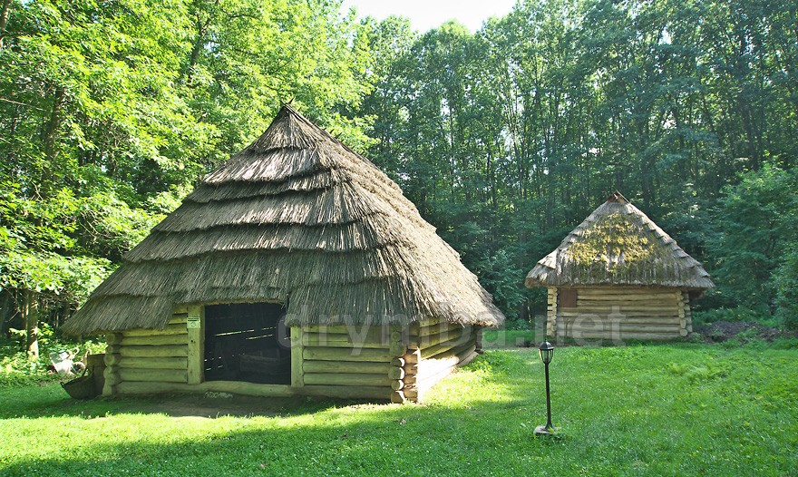

Сарненський історико-етнографічний музей — музей із скансеном у місті Сарни, філія Рівненського краєзнавчого музею. В музеї зібрані історичні пам'ятки, колекція старовинного одягу, предметів побуту, матеріалів які розповідають про промисли та ремесла поліського краю. На відкритому майданчику представленні архітектурні споруди Волинського Полісся. Нині у музеї налічується понад 7000 експонатів основного та стільки ж науково-допоміжного фонду.
Працівники музею проводять науково-дослідну роботу з вивчення матеріальної і духовної культури Рівненського Полісся. Завдяки етнографічним експедиціям фонди музею поповнилися колекціями сорочок, наміток, свит і речами домашнього вжитку. Зібрано вироби традиційних поліських промислів: гончарства, бондарства, лозоплетіння, різьби по дереву.
В музеї проходили персональні виставки місцевих майстрів народного мистецтва: різьбяра Василя Мисанця, вишивальниці Анастасії Карпишинської, Надії Ліневич, Тетяни Пантус, Євгенії Петришиної, художників Сергія Захарчука, художника-різьбяра Василя Позніка.
Щовесни на території музею проводяться свята народної творчості, а також обряд водіння Куста — традиційне свято для поліського регіону.
Сарненський історико-етнографічний музей користується пересувними виставками комп'ютерних копій Ермітажа, Третьяковської галереї, робіт Клода Моне. В музеї експонувались картини художників Миколи Глущенка, Емілії Бережницької, Марії Приймаченко, вироби місцевих майстрів-аматорів народного мистецтва: В. Позніка, В. Мисанця, вишивальниць - Лізи Познік, Надії Ліневич, Надії Боровик, Галини Паньковець та ін.
Відтворено свято "Куст на Поліссі", або "Водіння Куста", яке побутує на Волинському Поліссі з дохристиянських часів і проводиться на Трійцю.